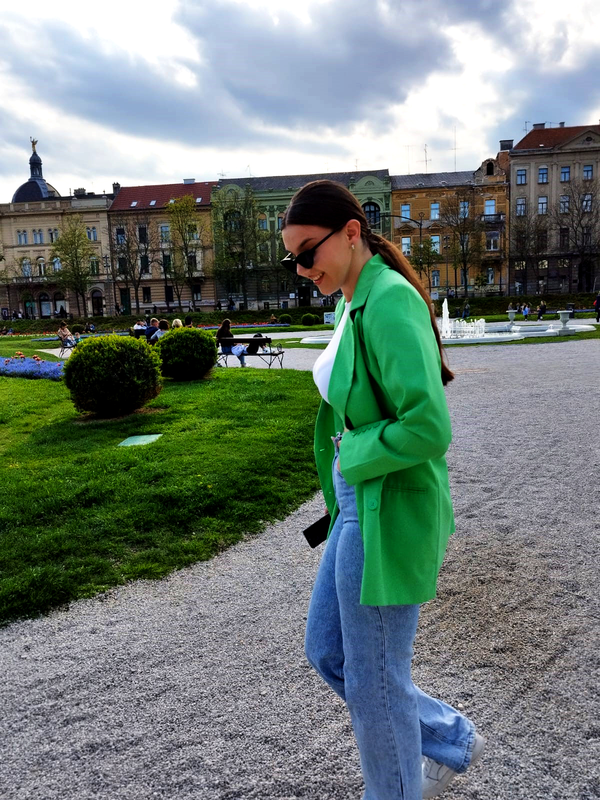
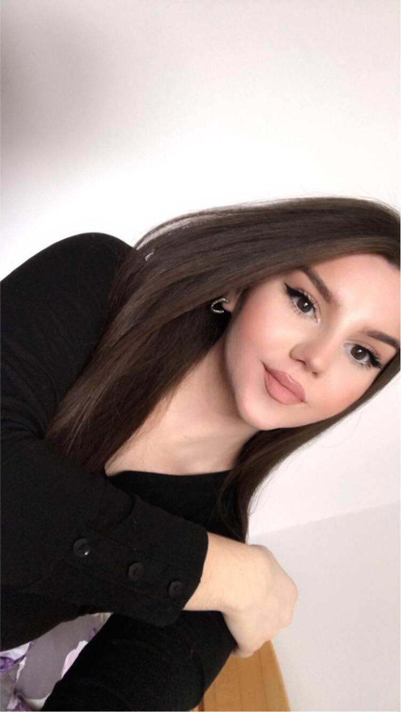
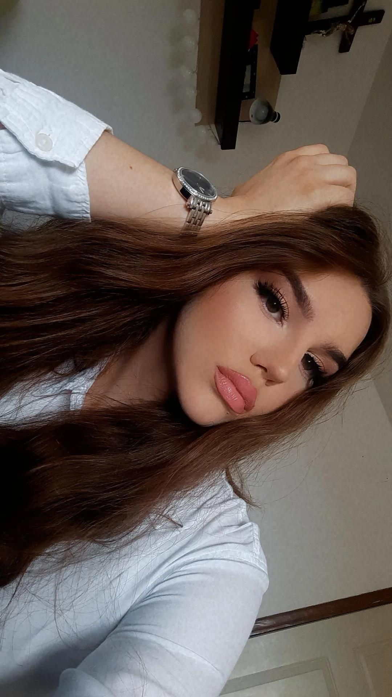
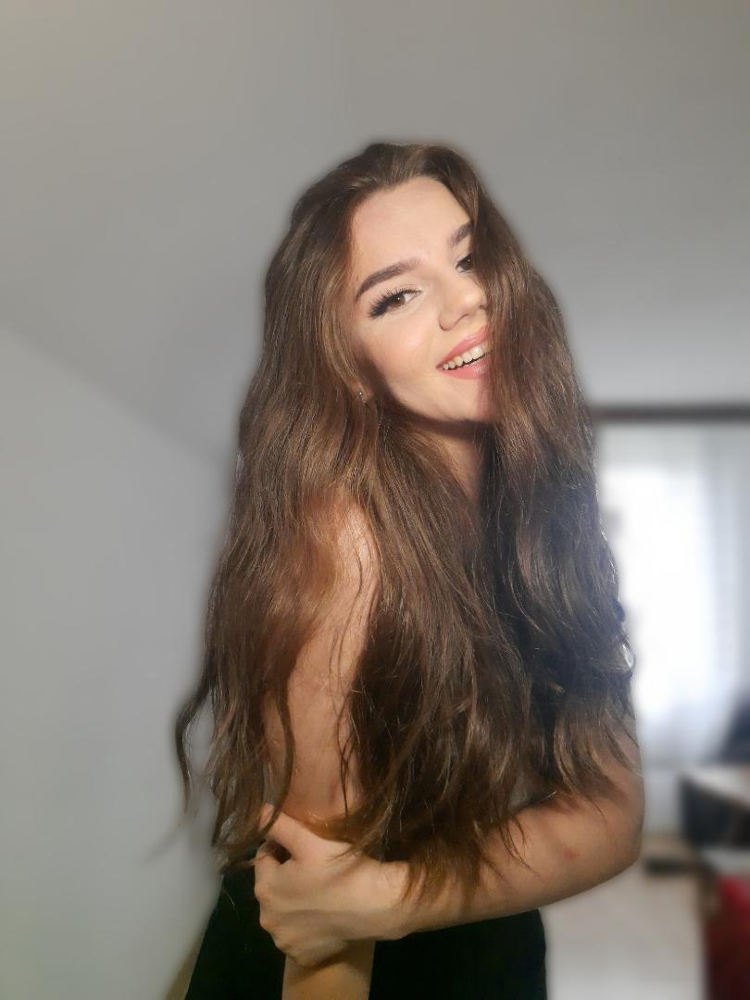
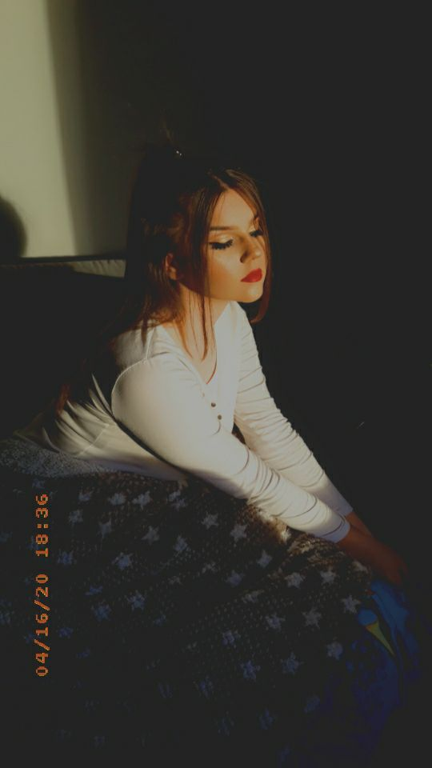
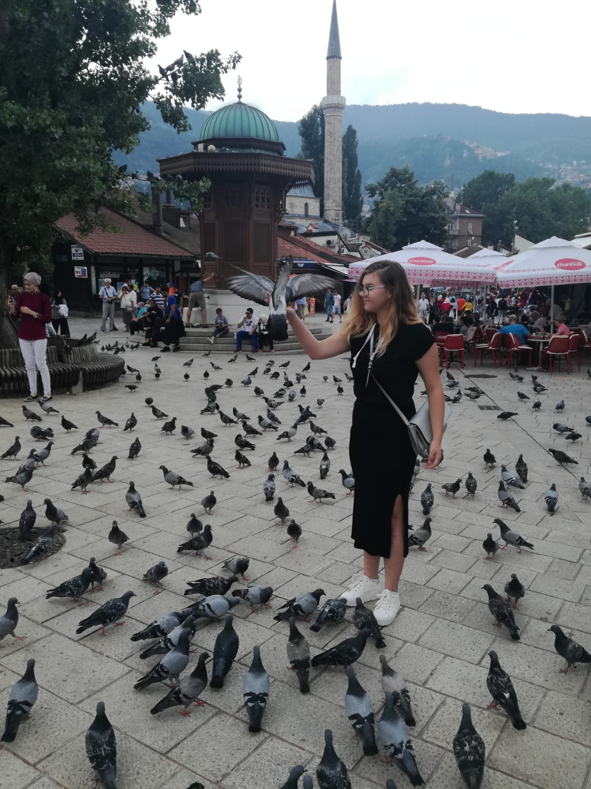
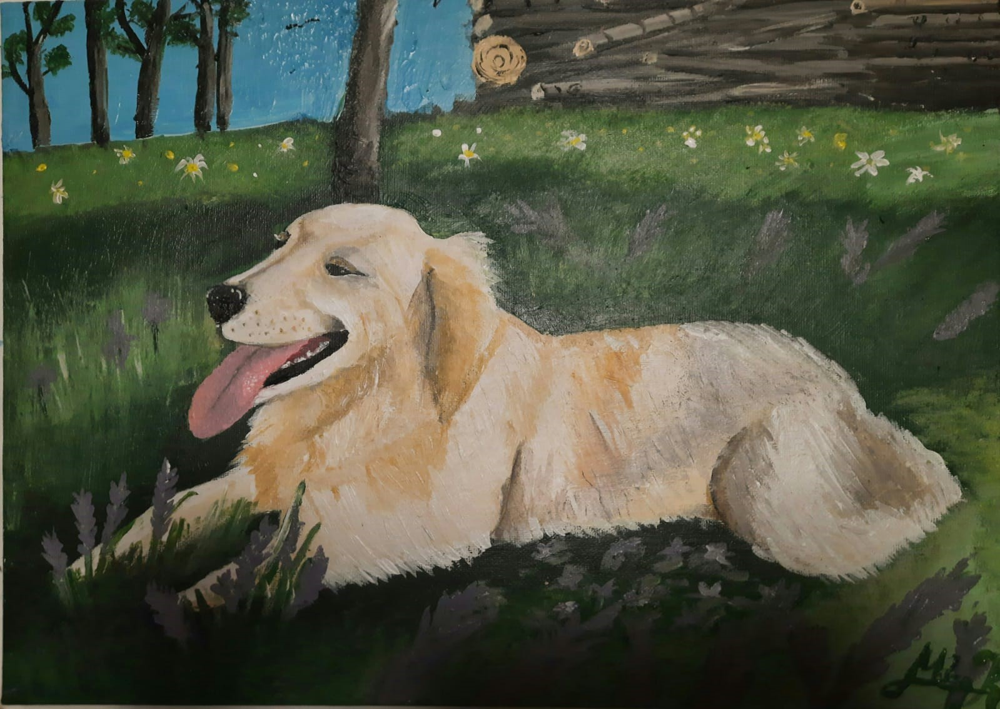

Moje ime je Matea Krištić. Rođena sam 6. prosinca 2002. godine u gradu Orašju, koji se nalazi na obali rijeke Save, u Bosni i Hercegovini. Srednjoškolsko obrazovanje sam završila u Franjevačkoj klasičnoj gimnaziji u Visokom, gdje sam otkrila svoju kreativnu stranu. Tamo sam se zaljubila u linije na papiru, boje, kistove i platna. Proširujući tako svoju kreativnost, nisam bila zadovoljna stvarima koje već postoje pa sam tako počela i sama dizajnirati. Od odjeće do građevina. Kako sam sebe pronašla u dizajniranju, odlučila sam upisati Dizajn grafičkog proizvoda na Grafičkom fakultetu u Zagrebu.
Umjetnost, bila digitalna ili na papiru ili platnu, pomogla mi je da lakše predstavim sebe. To je moj način izražavanje i komunikacije. Postoji jedan citat koji dovoljno objašnjava ovu činjenicu.
"Intelektualac kaže jednostavnu stvar na težak način.
Umjetnik kaže tešku stvar na jednostavn način."
- Charles Bukowski
Iz knjige Bilješke starog pokvarenjaka
Nikada se nisam voljela ograničavati, zato umjetnošću smatram sve ono što dolazi iz moje mašte

Ova "slika" na zidu je nastala u hodniku moje srednje škole. Za božićnu priredbu je bio potreban scenograf. Za pozadinu sam bila zadužema ja. Da, dobro se sjećam, negdje oko 19:00 sati navečer je u našu školu došao neki čovjek u posjet direktoru. Da, u 19:00 sati je malo čudn, ali za nekoga tko je živio u školi je sasvim opravdano. Sjećam se da me je direktor fra Ivan Nujić predstavio tom čovjeku. Nešto kao: "A ovo je Matea Krištić. (okrenuta prema zidu, zakolutala sam očima jer direktor nikad nije znao "ubosti" naglasak mojeg prezimena). Znate to je naša umjetnica inače iz Orašja."
Mislim da je ovo rad na koji sam najviše ponosna. Nastao je u ateljeu Grafičkog fakulteta, u prvom semestru, na likovnoj praksi. Možda čak i jedini rad kojim sam zadovoljna i mogu reći da je u potpunosti gotov.
A ovo? Ovo je Argos, poseban pas, zlatan pas. Ovo je bio poklon za rođendan meni posebnoj osobi.
Već ste shvatili da volim umjetnost, naročito slikanje, prema tome imam i svoje najdraže slikare.
NAJDRAŽI SLIKARI
Osim likovne umjetnosti, voli i pisanu umjetnost. Slaganje riječi u redove je kao slaganje puzzli, na kraju te riječi pretočiš u sliku. Kao što imam najdraže slikare, tako imam i najdraže pisce.
NAJDRAŽI PISCI
Također i pišem. Ponekad. Ali to bih radije ostavila za sebe. I pišem da nikome ne bih pričala. Pišem o onome što nitko ne treba znati.
Naravno da volim i glazbu. A tko ne voli? Brat svira gitaru i pjeva, pa nas dvoje zajedno pjevušimo u slobodno vrijeme. Omiljenu pjesmu nemam. Svaka priča svoju priču. Ali uživam u video snimcima koncerata Đorđa Balaševića.